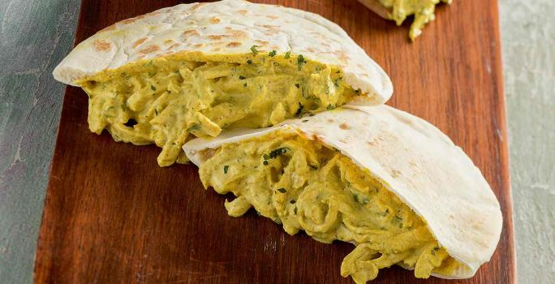

QUESADILLA DE POLLO AL CURRY

Con buen queso y mejor vino, más corto se hace el camino
Ingredientes:
- 200 gr de pechuga de pollo
- 60 gr de queso crema light
- 40 ml de leche
- 2 lonchas de queso
- 1 tortilla de avena
- Sal y curry
Receta:
- Cortar la pechuga en cuadrados y freirla
- Echar el queso la leche curry y la sal
- Mezclar todo y esperar a que se reduzca
- Mientras colocar en otra sarten la tortilla de avena con dos lonchas de queso
- Echar la carne ya cocinada en la tortilla
Información nutricional:
- Por cada 100 gr:
- 182 Kcal
- 24,5 gr Proteína
- 4,5 gr Grasas
- 9,8 gr Hidratos